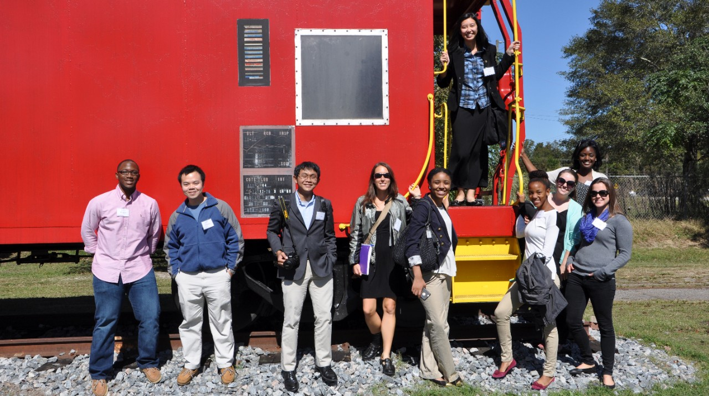

Academics

Calving simulator offers training opportunity for cattlemen
The University of Georgia College of Agricultural and Environmental Sciences and College of Veterinary Medicine are offering a unique training opportunity for cattlemen who want more information on how to assist cows and heifers having difficulty calving.
Read More
Research
High-heat, low rainfall set the stage for harmful algal blooms and cyanobacteria
With the summer heat and sporadic rainfall, conditions are right for farm ponds to become inundated with harmful algal blooms.
Read More
UGA Extension
UGA College of Agricultural and Environmental Sciences: Success Grows Here
Agricultural, food and environmental industries are the biggest economic driver in Georgia, and they impact our life every day. That’s why the University of Georgia's College of Agricultural and Environmental Sciences is so important to our future.
Read More